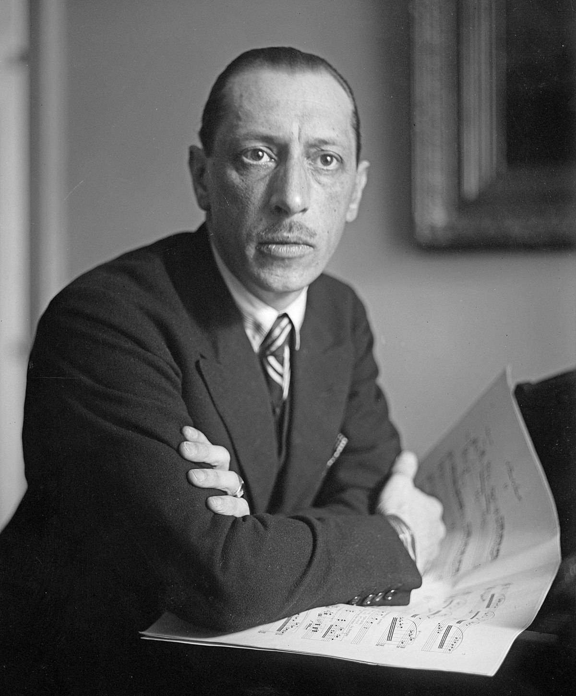
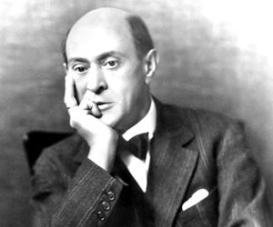

Pre-History
Music has been around since the dawn of time. Not much is represented through Pre-historical music for obvious reasons. The only musical objects that have been discovered that is representative of pre-historical music is various instruments. Some of these instruments are carved from bones, fur, and various other types of accessible resources from the era. Typical instruments made were flutes and stringed instruments.
Medieval Music
Very little medieval music survives today. Majority of the music of this era is music of the church, mainly represented in gregorian chants. Gregorian chants are a chorus of voices singing in unison over sacred text. Hildegard Von Bingen is one of the most notable composers of this era. She was influential in her use of the musical "drones" during her gregorian chants, which is one of the earliest examples of background music.
Renaissance Music
In the renaissance and "Age of Enlightenment" eras, many new musical techniques and ideas were formulated. Composers such as William Byrd, Tallis, and Palestrina took the ideas first formulating from the Catholic church and started to add background instruments, choruses with more than one part, and implementations of music theory.
Secular Music
During this era, the common man finally had access to musical instruments and began writing their own musical scores that were not related to any sacred text or rules. This is called "Secular" music.
Sacred Music
The Catholic church is the only surviving records of the earliest forms of music. Music was only played at church during service and was punishable by death to perform music otherwise. The Renaissance is the first era where average people could freely perform their own music, however, the church would still have restrictions in certain regions.
Baroque Music
The Baroque era brought to us many new styles of music, as well as some of the most recognized music today. The Piano was invented near the end of this era, but typically composers would use the precursors to pianos such as Harpsichords and Clavichords in their music. Music from this era is very calculated and mathematical, with strict rules as to which notes are allowed to be played at any given time.
Johann Sebastian Bach

Johann Sebastian Bach's music was well preserved over the years and has left a lasting impression on the classical music community. One of his most recognized and played pieces is his "Cello Suite No.1", famously performed by modern day Cellist, Yo-Yo Ma.
Classical & Romantic Era Music
The Classical and Romantic eras of music saw heavy experimentation in music as well as several new styles. The following composers are mentioned because they have each provided innovative musical techniques that had sustained throrugh subsequent eras of music.
Wolfgang Amadeus Mozart

Mozart, a child prodigy, had impeccable musical ability from a young age. His first composition at age 4 proved to be extraordinary for his age. A common story about Mozart is that at age 12 he witnessed a performance of the "Miserere", a highly protected piece of sacred music that strictly prohibited keeping a copy or performing outside of the church. Mozart listened to this 15 minute piece of music and was able to transcribe the entire piece from memory in only a night. He returned the next day for the next performance to check his work, and found he only missed 4 notes in the entire piece.
Ludwig Van Beethoven
Hover over this image to listen to Beethoven!

Ludwig Van Beethoven more or less picked up from where Mozart left off after his untimely death. Beethoven was highly influential for reimagining the form and emotion that could be communicated through music. Pieces such as his Moonlight Sonata, his symphonies, and his concertos helped pave the way for the emotional breakthrough in music called the "Romantic" era.
Richard Wagner

Richard Wagner was known for taking the Opera form and building highly elaborate sets and venues specifically designed for his Opera performances. Due to his Operas overwhelming popularity, The Wagner Opera house in Germany has a consistent 10-year waiting period for anyone who is interested in viewing his operas today. He is also known for popularizing and using what is known as a "tone-cluster", a mesh of musical notes that do not form a specific chord.
Early 20th Century Music
With this era came the dissolution of the practices and standards held in previous eras. Composers such as Stravinsky and Schoenberg formed their own theory on music, thus leading to highly expiremental and expressive music.
Igor Stravinsky
Igor Stravinsky is known for his "The Rite of Spring" ballet. This ballet was a highly expiremental piece of music that did not follow standard musical traditions of the past. It is reported that the first performance of this ballet caused a riot due to confused and irritated audience members.
Arnold Schoenberg
Arnold Schoenberg created his own theory on music called the "12-tone scale". This new method was used by several expiremental and minimalist composers of the early 20th century.
Modern Music
With the access to Guitars, Pianos, Bass, Fiddles, and many other instruments; several new genres arose during the turn of the century.
Country
A common saying about Country music is that it's "Four chords and the truth". Although it seems simple at face-value, many Country musicians are regarded as some of the most accurate musicians of all time. Country music's origins start with The Carter Family, a family of musicians who would eventually be the inspiration for Bluegrass music. As the genre progressed, individual singer/songwriters such as Hank Williams Sr. and Lefty Frizzell dominated the charts, leading to such greats as Waylon Jennings, George Jones, Patsy Cline, Roger Miller, and many more.
Jazz
Jazz music is considered a freely-expressive type of music in which you can take more creative risks. As opposed to country, Jazz uses many dissonant chords and has spastic instrumental solos as well as expiremental vocals such as scat-singing.
Blues

Blues music was inspired from struggle, as the best blues musicians have put it - "You either have the blues, or you don't". Blues musicians have a particular talent to display anguish, depression, humor, hope, despair, and joy all within their performances.
Rock
As Country and Blues music hit record sales, Rock music crept up unprecedentedly on the charts. Many Country musicians were in awe at how musicians such as Elvis Presley and Chuck Berry could throw a hit on the top of the charts like it was nothing. Rock music became very popular, however, it's musical elements were deeply rooted in subgenres of Country and Blues such as Honky-Tonk.
Metal
As Rock music progressed, like all genres, it became heavier and louder. Eventually, elements from classical music worked their way into rock music. This, combined with heavy distorted guitars, loud and fast drums, and shrieking vocals formed the foundation for what would become Metal music.
Electronic
During the 70s and 80s, many musicians started to have access to computer-generated sounds as well as analog synth devices. Bands and DJs such as Kraftwerk and Girl Talk have provided many innovative and creative songwriting techniques using these devices rather than traditional instruments. With this comes some resistance from music "purists", who do not like the digital or synthetic sounds produced.